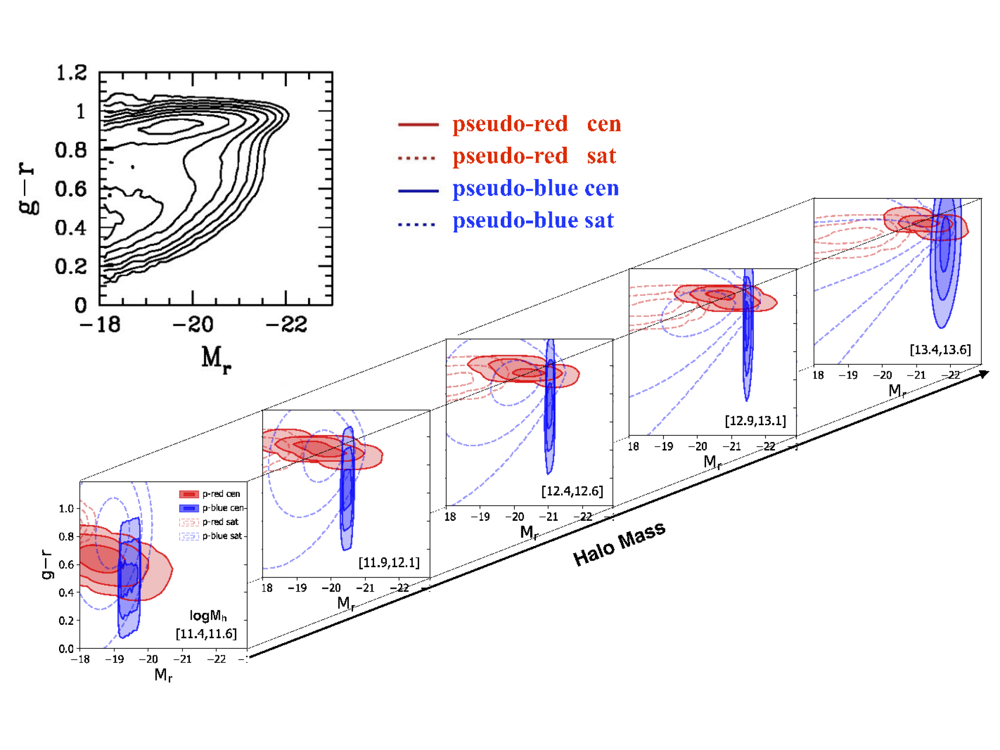
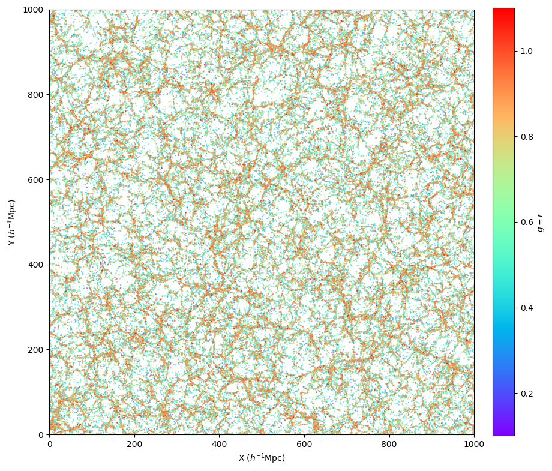
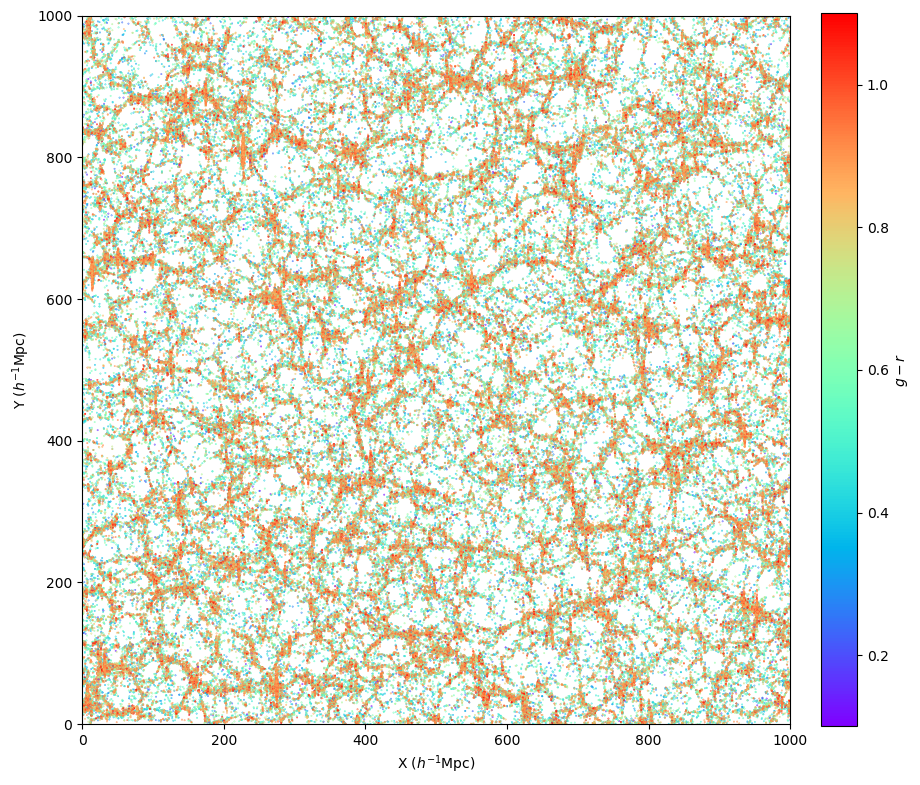
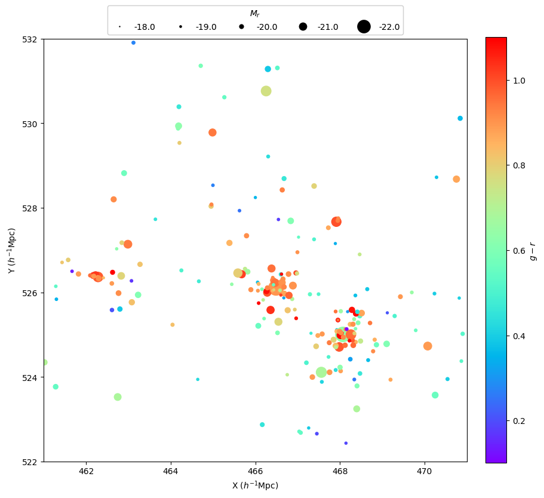
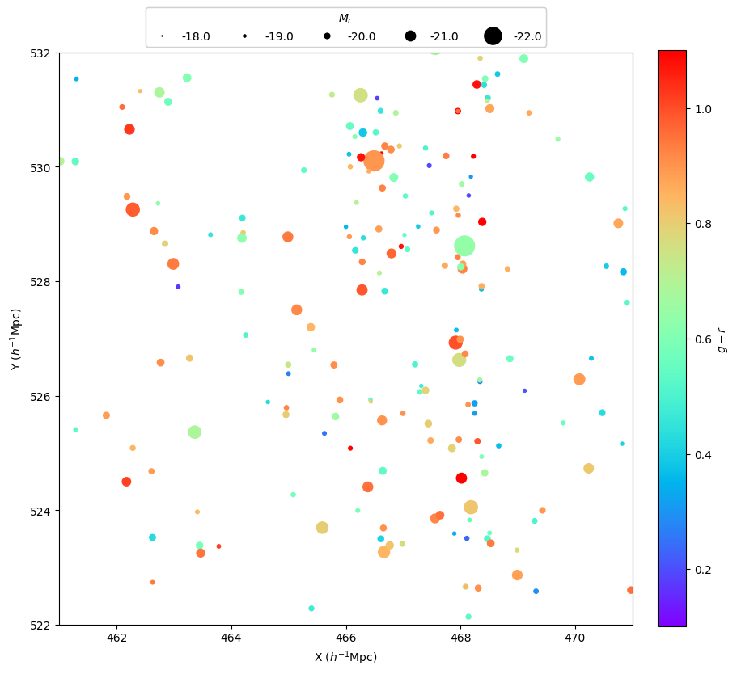
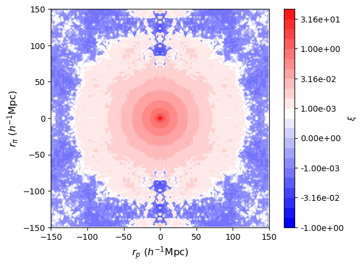
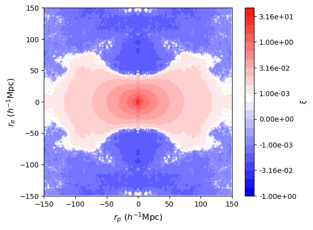

a mock with galaxy magnitude and color that reproduces
the luminosity- and color-dependent clustering of SDSS Main galaxies

Introduction
We construct mock galaxy catalogs that reproduce the color- and luminosity-dependent clustering of SDSS DR7 galaxies based on the modeling results in
Xu et al. (2018). In the model, the galaxy-halo relation is parameterized as the galaxy color-magnitude distribution as a function of halo mass (as illustrated in the above plot), i.e., the Conditional Color-Magnitude Distribution (CCMD). The model is constrained by simultaneously fitting the projected two-point correlation functions of galaxies in fine bins of color and magnitude, adopting the accurate and efficient halo-based galaxy clustering computation with N-body simulations in
Zheng & Guo (2016).
The CCMD galaxy mocks can be used for many applications. For example, they can serve as DESI BGS mocks for various tests. Currently, we provide one galaxy mock catalog based on the MDPL2 N-body simulation. We plan to extend the construction to use other N-body simulations. If you have specific needs beyond the mock catalog provided here, please contact us.
Mocks
The galaxy mock construction is done through populating Rockstar halos in the MDPL2 N-body simulation (box size 1000Mpc/h comoving on a side; redshift=0). Central galaxies are put at the potential minimum of halos, and satellite galaxies are drawn from random particles inside halos. There are two files, the galaxy mock and the associated halo information file.
Both files are in ascii format and should be pretty much self-explanatory from their headers. Below are the descriptions in detail.
The galaxy mock consists of galaxies with r-band absolute magnitude Mr<-18. After 8 header lines, each line in the mock is a galaxy, with the following fields.
-
galID x y z vx vy vz Mr gmr type
galID -- galaxy ID (starting from 1, in a continuous ascending order)
x y z -- galaxy position (Mpc/h comoving)
vx vy vz -- galaxy peculiar velocity (km/s)
Mr -- r-band absolute magnitude (usual notation, K- and evolution-corrected to redshift~0.1, calculated assuming h=1)
gmr -- g-r color (usual notation, K- and evolution-corrected to redshift~0.1)
type -- CCMD model component type (0/1 - pseudo-blue/red central galaxy; 2/3 - pseudo-blue/red satellite galaxy)
In most applications, 'type' may be of no particular interest (but it can be used to separate galaxies into centrals and satellites). Galaxy positions are in real space. To produce the redshift-space mock, after choosing the line-of-sight direction (e.g., z direction), shift the positions (e.g., z => z+vz/100 for redshift=0, if no velocity bias is assumed).
In the halo information file, there are 8 header lines, after which each line represents a halo (minimum mass 1011Msun/h). Each halo line has the following fields.
-
haloID logMh Ngal galID_starting
haloID -- Rockstar halo ID in the MDPL2 simulation
logMh -- log10[halo virial mass / (Msun/h)]
Ngal -- number of mock galaxies in this halo
galID_starting -- galaxies in this halo have galaxy IDs from galID_starting to (galID_starting+Ngal-1)
In combination with the galaxy mock, the halo information file can be used to obtain the various forms of galaxy-halo relation in the mock, such as the conditional luminosity function, the conditional color-magnitude distribution, and the mean halo occupation function for a mock galaxy sample defined by cuts in galaxy color and luminosity, all separated into central and satellite galaxy contributions. Note that halo mass here is virial mass M
vir. One can use the formula in
Xu et al. (2018; section 3.3) to convert it to M
200b (with halo mean density being 200 times that of the background universe):
log M
200b - log M
vir = 0.0052(log M
vir - 13.5) + 0.0498.
Credits
If you use the CCMD mock for your investigations and applications, please cite the following references as appropriate.
-
CCMD Modeling of SDSS Galaxy Clustering
Xu et al. (2018), MNRAS, 481, 5470
"The conditional colour-magnitude distribution - I. A comprehensive model of the colour-magnitude-halo mass distribution of present-day galaxies"
-
Modeling Galaxy Clustering with Simulations
Zheng & Guo (2016), MNRAS, 458, 4015
"Accurate and efficient halo-based galaxy clustering modelling with simulations"
As we used the MDPL2 N-body simulation data to produce the mock galaxy catalog, please properly acknowledge the simulation and data service efforts by following their guideline on the CosmoSim website.
Contact
If you have any questions or comments about the CCMD mock, please let us know, If you have specific needs and would like to collaborate with us, please get in touch with us.
- Zheng Zheng (zhengzheng_at_astro.utah.edu), University of Utah
- Haojie Xu (haojie.xu_at_sjtu.edu.cn), Shanghai Jiao Tong University
Gallery


A slice (10Mpc/h thick) of the mock catalog (left - real space; right - redshift space), color-coded by galaxy color.


A zoom-in region (10Mpc/h x 10Mpc/h; left - real space; right - redshift space, with the vertical direction as the line of sight), with symbol size representing galaxy luminosity and symbol color for galaxy color.


An example of the real-space (left) and redshift-space (right) two-point correlation function measured for the Mr < -21 mock galaxy sample (averaged over three viewing directions; note the BAO feature at pair separation ~100Mpc/h).
{kind=link}
{kind=link}
{kind=link}
{kind=link}
{kind=link}
{kind=link}
{kind=link}